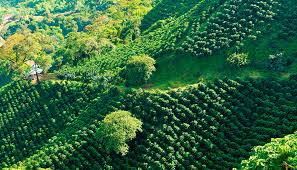

La Esperanza
1.450 m.s.n.m.
Tradición cafetera de tres generaciones. Cultivos en sombra diversificada con énfasis en lotes experimentales de fermentación controlada. Microlotes de carácter único.
Integración completa: desde la finca hasta el café excelso listo para exportación
Origen único • Trazabilidad garantizada • Excelencia en cada lote
Conversemos sobre tus lotesAracafé es el resultado de tres generaciones de experiencia cafetera. Desde nuestras raíces en Jardín, Antioquia, nos hemos dedicado a cada etapa de la cadena de valor del café: la producción en nuestras fincas, la compra responsable de café pergamino a productores aliados, y la trilla especializada que convierte ese café pergamino en café verde excelso listo para mercados nacionales e internacionales.
Nuestra visión es simple pero profunda: integrar la cadena completa para asegurar que cada lote que sale de nuestras manos refleja excelencia, trazabilidad y confianza. Trabajamos con criterios rigurosos de calidad y mantenemos relaciones de largo plazo con nuestros caficultores aliados.
Nuestros valores fundamentales son: la excelencia en el trabajo bien hecho, la confianza en el cumplimiento de lo acordado, y el compromiso de compartir la trazabilidad y frescura del café verde con cada uno de nuestros compradores.
Ubicado en el corazón de la región cafetera colombiana, Jardín es sinónimo de excelencia. Sus altitudes entre 1.200 y 1.800 metros sobre el nivel del mar, combinadas con microclimas perfectos y suelos volcánicos ricos en minerales, crean las condiciones ideales para cultivar café de especie arábica de alta especialidad.
La tradición cafetera de Jardín se remonta a más de un siglo. Trabajar con un origen único nos permite fortalecer la trazabilidad de cada lote, asegurar consistencia en perfiles sensoriales, y ofrecer a nuestros compradores internacionales la confianza de saber exactamente de dónde viene su café verde.

1.450 m.s.n.m.
Tradición cafetera de tres generaciones. Cultivos en sombra diversificada con énfasis en lotes experimentales de fermentación controlada. Microlotes de carácter único.
1.650 m.s.n.m.
Enfoque en sostenibilidad y producción orgánica certificada. Cosecha selectiva manual y beneficio en seco. Rendimientos consistentes y perfiles limpios.
1.750 m.s.n.m.
La altitud más elevada proporciona maduración lenta y desarrollos aromáticos complejos. Variedad tradicional Typica. Microlotes de alta especialidad.
1.350 m.s.n.m.
Producción en volumen con estándares de calidad rigurosos. Alianza con pequeños caficultores locales. Lotes homogéneos, grandes volúmenes disponibles.
La compra de café pergamino es el punto de partida de nuestra cadena de valor. Trabajamos directamente con productores aliados de confianza, seleccionando lotes que cumplen nuestros criterios rigurosos de calidad: humedad controlada, grano limpio, y perfil sensorial consistente.
Cada compra marca el inicio de la trazabilidad del lote. Documentamos el origen, la altitud, el caficultor y las características iniciales. Esta información fluye con el café a través de todo nuestro proceso de trilla, asegurando que cuando el café verde excelso sale hacia el mercado internacional, nuestros compradores conocen la historia completa del lote.
El café pergamino que compramos se transforma en nuestras instalaciones de trilla en café verde excelso: granos limpios, clasificados, libres de defectos, listos para tostadores nacionales e internacionales.
Cada lote se procesa con protocolos estandarizados que aseguran uniformidad en tamaño, densidad y humedad (11% ± 0,5%). Realizamos controles de calidad en cada etapa: antes de la trilla, durante el proceso y al empacar.
El resultado es un café verde de consistencia excepcional: perfiles limpios, acideces vivas, y cuerpos bien definidos. Nuestros lotes son certificables bajo estándares internacionales (SCAA, FLO u otros que el comprador requiera).
Transformación rigurosa en tres etapas clave
El café verde debe reflejar la promesa de excelencia cuando llega al tostador. Por eso realizamos controles de calidad sensorial en nuestros lotes: cata según protocolos SCA, evaluación de acidez, cuerpo, aroma y sabor.
Cada lote se documentan sus atributos sensoriales esperados. Esto permite que tostadores seleccionen el café que mejor se adapte a sus perfiles de tueste y segmento de mercado, con la confianza de que el perfil será consistente.
Flexible para satisfacer volúmenes desde pequeños lotes hasta contenedores completos
Nota sobre logística: Aracafé maneja procesos tradicionales de café lavado, con posibilidad de lotes diferenciados (fermentaciones especiales, procesos naturales o honey) bajo consulta. Los gastos de exportación y transporte se acuerdan según el Incoterm pactado entre las partes (CIF, FOB, DDP, etc.).
El formulario se procesará. Para integración con backend, conecta con tu servidor SMTP en script.js.
Jardín, Antioquia, Colombia
Correo: contacto@aracafe.com
WhatsApp/Teléfono: +57 (6) 8348-xxxx
"Tres generaciones de café, integradas en cada lote."